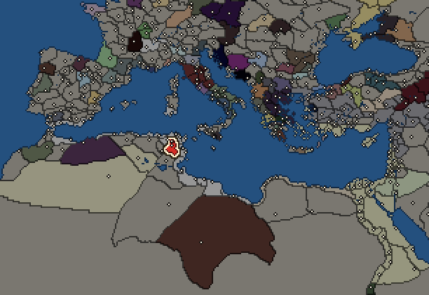
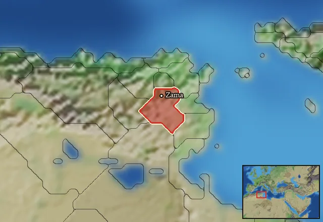

RTR: Imperium Surrectum
RTR: Imperium SurrectumMassylii


- difficulty Difficult
- Libyan culture
- believes
 Libyan
Libyan - 2 settlements
- capital Thugga
- 7,000 manpower
- 2 characters
- 12 faction units
- 434 regional units
The campaign brief
"But if the Numidians came nearer, they then showed their real quality, charging them with the greatest fury, routing and scattering them." – Sallustus
The desert devours all life; we, too, devour life. The lives of those who are inattentive, who dare to enter our countries, wander without permission and do wrong to our brothers and sisters - we leave them disappearing on the endless plains of our sandy home. The desert also creates life. We are alive and we will still be alive if there is destruction and doom elsewhere. Our civilisation is more powerful than many people might think, for when we get together, ride our horses and ride against the enemy, we are irresistible. In our towns of bright clay and burnt red bricks, rare oases, scattered throughout the vastness of the desert, colourful bustle prevails in the bazaars and markets. There we offer the splendid products of our seemingly so poor home, and even if they might not match the goods of the peoples on the coast, they are the most precious gifts of our gods, which they give us in their grace and wisdom.
Long ago, the coast was part of our home. Our fathers and their fathers caught fish there, dried and salted it, and sold it to their brothers and sisters in the hinterland. It was a simple and hard, but also a good life ... until the Phoenicians came. They forced our ancestors into the interior and built great cities which quickly absorbed the fertile meadows. They bound the land through endless paths of hard stone, which hurt the hooves of our horses, and tamed the stormy sea on the coast through winding harbour docks.
The Carthaginians are the most cunning of all the Phoenicians. Their fabulous Queen Elissa fled from her brother Pygmalion from Tyros and landed on our coast. These sorry tales are still told at every campfire across Africa today: a foolish chieftain promised her as much land as she could mark with a piece of cow skin, and he was rubbing his hands already, hoping to be able to lead her into his tent as his prisoner. But the Phoenicians are sly people, who travel far on their ships and see a lot of the world. Elissa cut the cow skin into thin strips, spanning an area that was big enough for her people. Within a short time, this "New Town", Qart-Hadašt, rose to dominion of the Phoenician cities in Africa. Against their walls, against their innumerable ships, and against their wily leaders in the Carthaginian Senate, our ancestors could not prevail. The Carthaginians remained near the water, but their influence pushed the hinterland to the edge of the great desert. Their sweet promises deceived many a chief and brought him under their rule. Our brothers and sisters have suffered greatly from the newcomers’ love for tribute and trade.
But now, with you as our proud new king, we can throw any rival back into the sea! With our fast horses, we will crush the iron-clad cowards they call their infantry. Like a hammer, we will crush them, let countless spears rain, and before their slow hoplites can react, we will already be gone again – back among the sands. We are not afraid of their mighty elephants - they are animals from our homeland, and we know their weak spots! Our best weapon, the proud warrior on horseback, combines speed with deadly precision. From childhood we learned the warcraft, the way of the javelin, and no people of the world masters its skill like ours. The newcomers will pay for their past injustices, and we will once more rule all of our rightfully owned country! The desert devours all lives, and we Massylii are the true sons of the desert!
Starting settlements
Massylii begins with 2 settlements and 7,000 manpower.
| Settlement | Region | Size | Manpower | Already built | Settlement | Region | Size | Manpower | Already built |
|---|---|---|---|---|---|---|---|---|---|
| Thugga (capital) | Tobgaxag | town | 5,000 | 4 buildings | Zama | Zama Meizon | town | 2,000 | 4 buildings |
What is already built in each settlement
Thugga, in Tobgaxag: Governor's House, Homeland, Region Information Scroll, Training Grounds
Zama, in Zama Meizon: Small Colony, Governor's House, Homeland, Region Information Scroll
Starting diplomacy
Massylii begins the campaign with no allies, no trade agreements and no wars.
Like every faction, it is also at war with the  Free Peoples, who hold every settlement no faction does.
Free Peoples, who hold every settlement no faction does.
Faction mechanics
From the game's own guide. See also the other game guides.
Military reforms
The Massylii have one reform.
Requirements: 100 turns.
Unlocks: Numidian Infantry
Reforms
For every faction: Military innovations have arrived!, Second wave of military innovations have arrived!.
Homeland
Massylii's homeland is 1 region. Only there can it install the Homeland government (more on homelands).

Starting characters
| Name | Role | Age | Name | Role | Age | ||||||
|---|---|---|---|---|---|---|---|---|---|---|---|
| Gaia | General | 18 | Naravas | General | 17 |
Units you can recruit
The same as in the main campaign.